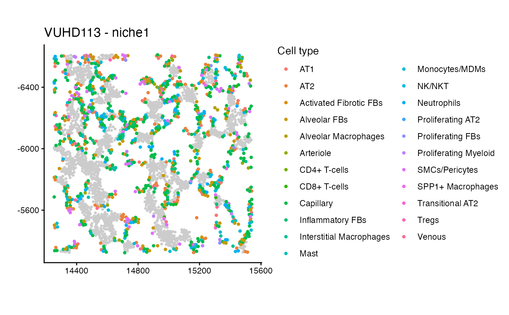
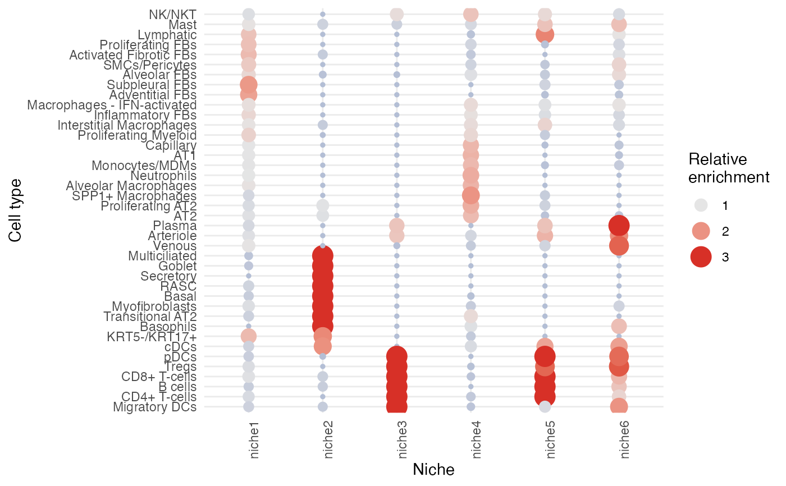
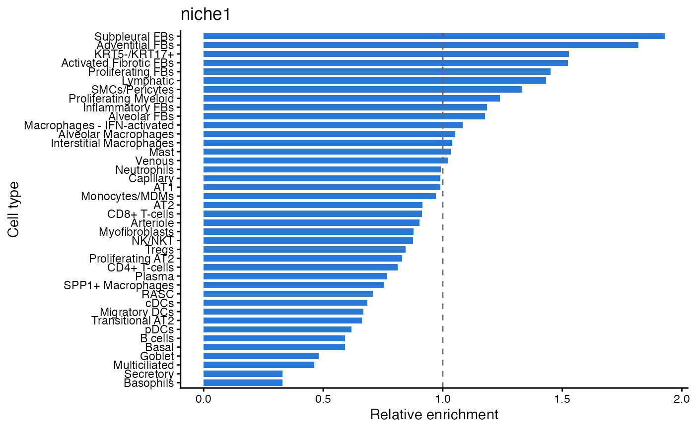

plotNicheSpatial() shows the cells of one niche in one image.
nicheCompositionMap() shows the relative enrichment of each cell type in
each niche as a bubble plot or heatmap. nicheBarplot() shows it for a single
niche. nicheProportionBoxplot() compares a niche's per-image proportion
between outcome groups.
Usage
plotNicheSpatial(spe, imageID, niche, nicheCol = "nicheWeighted", cellSize = 1)
nicheCompositionMap(
spe,
niche,
cellType = "cellType",
type = c("bubble", "heatmap"),
limit = c(0.33, 3),
...
)
nicheBarplot(spe, niche, target, cellType = "cellType", limit = c(0.33, 3))
nicheProportionBoxplot(proportions, niche, spe, outcomeCol)Arguments
- spe
A
SummarizedExperiment(e.g. aSpatialExperiment) with the cell type, image and coordinates of every cell in the form given bygetCellData().- imageID
The image to plot.
- niche
For
plotNicheSpatial()and the proportion boxplot, the niche to show. FornicheCompositionMap()andnicheBarplot(), the niche assignments: either a vector of niches named by cell ID, such asniches$nicheWeightedfromrunNicheIdentification(), or the name of acolDatacolumn holding them.- nicheCol
The niche assignments for
plotNicheSpatial(), in either of the forms taken bynicheinnicheCompositionMap().- cellSize
Size of the highlighted cells in
plotNicheSpatial(), the cells of the chosen niche. The grey background cells always have size 0.7.- cellType
Column of
colData(spe)with cell type labels.- type
"bubble"or"heatmap".- limit
Lower and upper limit of the relative enrichment.
- ...
Further arguments passed to
pheatmap::pheatmap().- target
The niche to plot in
nicheBarplot().- proportions
The
propWeightedorpropUnweightedelement of the results oftestNicheOutcome(): the table you pass decides whether the weighted or the unweighted niches are plotted.- outcomeCol
Name of the per-image outcome column in
colData(spe).
Value
A ggplot object; for nicheProportionBoxplot() a girafe
(interactive) widget; for nicheCompositionMap(type = "heatmap") the
result of pheatmap::pheatmap().
Examples
data(lungSubset)
data(lungCellTypeTree)
data(lungConfList)
niches = runNicheIdentification(lungSubset, lungCellTypeTree, lungConfList,
r = 50, k = 6)
#> Computing unweighted LISA curves...
#> Generating local indicators of spatial association.
#> Computing weighted LISA curves...
#> Generating local indicators of spatial association.
#> Clustering niches...
plotNicheSpatial(lungSubset, "VUHD113", "niche1",
nicheCol = niches$nicheWeighted)

nicheCompositionMap(lungSubset, niches$nicheWeighted)

nicheBarplot(lungSubset, niches$nicheWeighted, "niche1")

res = testNicheOutcome(lungSubset, niches$nicheUnweighted,
niches$nicheWeighted, outcomeCol = "disease_status", subject = "subject")
if (requireNamespace("ggiraph", quietly = TRUE)) {
nicheProportionBoxplot(res$propWeighted, "niche1", lungSubset,
"disease_status")
nicheProportionBoxplot(res$propUnweighted, "niche1", lungSubset,
"disease_status")
}